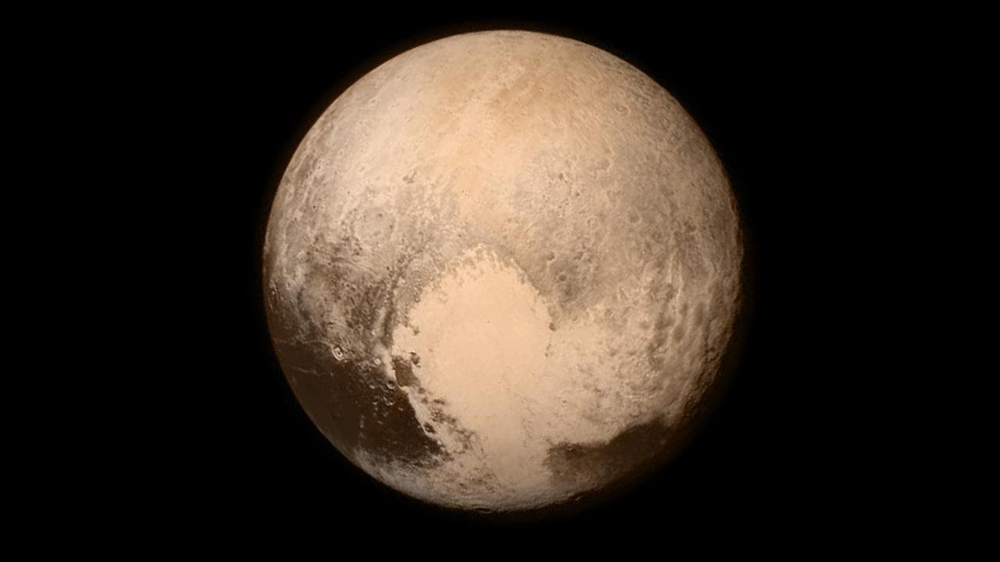

The Solar System
Scroll down to learn more about our solar system.
The Sun
This is the star of our solar system, located about 150 million kilometers
from Earth. This ball of hot plasma is mostly made up of hydrogen and helium. A
strong gravitational force pulls in planets, asteroids, comets, and debris, causing
these things to orbit around it.
The Sun is what lights up the Earth ever since it formed 4.6 billion years ago.
Sunlight is what allows for both plant and animal life on our planet, and it's
ultraviolet rays allow you to get a tan on sunny days.
Its mass takes up 99.9% of our solar system, at 1.99e30 kg. It's 330,000 times the
mass of Earth, but it's radius is only about 100 times the earth, at 696,342 km.
Though it's the largest item in our solar system, it's actually an average size
for a star. It gets extremely hot, as well; the hottest part of the Sun is it's
core, at 15 million C, while it's surface is much, much cooler at 5504.85 C.
Learn more about the Sun at the NASA website.
Go back to the Explore page.
Or, scroll up or down to learn about other bodies in space.
Mercury

Mercury is the closest planet to the Sun, as well as the smallest in our solar
system. It's radius is only 2439.7 km, not much larger than the Earth's moon.
It's also the fastest in our solar system; due to it's close distance to the
Sun, it goes extremely fast at a speed of 47 kilometers per second. A year on
Mercury, or the time it takes to fully orbit around the Sun, is only 88 days
on Earth.
Mercury has no rings or moons, and it has a rough, rocky surface. Like the
Earth's moon, it's surface is covered in craters. It's core is metallic and
partially molten and takes up 85% of the planet's radius. Mercury doesn't have
an atmosphere, but instead has an exosphere made of oxygen, sodium, hydrogen,
helium, and potassium.
It also has extreme temperatures that dramatically change during its day and night.
During the day, it can reach temperatures of 430 C and dip down to -180 C during the
night. It's days are quite long, though; it takes 176 Earth days for Mercury to
complete a full day-night cycle.
Learn more about Mercury at the NASA website.
Go back to the Explore page.
Or, scroll up or down to learn about other bodies in space.
Venus

Venus is the second planet from the Sun, as well as the hottest. Though Mercury
is closer to the Sun, Venus' atmosphere traps the heat in and causes it to heat
up more. It's atmosphere is made out of carbon dioxide, with clouds made out of
sulfiric acid. Because of this, it can get to 475 C on its surface.
Compared to Earth, it's incredibly similar. In fact, some people call it Earth's
sister planet. It's size is nearly the same as Earth; it's radius is only 300km
smaller, at 6051 km. It's mass isn't too far off either, at 4.87e24 kg.
Venus also has many natural structures on its surface. It's covered in valleys,
mountains, and volcanoes. One day on Venus takes 243 Earth days, and one year
takes 225 Earth days. It's also the brightest object in the night sky from
Earth, after the moon.
Learn more about Venus at the NASA website.
Go back to the Explore page.
Or, scroll up or down to learn about other bodies in space.
Earth

Our Earth is unique in a lot of ways. Not only is it the only planet that
we know of with life, it's surface is also covered in water. In fact, 71%
of the Earth is water. It's the third planet from the Sun and about 150
million kilometers away. Earth also has one moon, referred to as "The Moon".
Earth is the fifth largest planet in the solar system and the largest of
the terrestial planets (Mercury, Venus, Earth, Mars). It has a radius of
6371 km and a mass of 5.97e24 kg. It's temperatures are not extreme at all,
ranging from -89.2 to 56.7 C.
Earth's atmosphere is one of the things that allows life to flourish here.
It's made out of 78% nitrogen, 21% oxygen, and the rest is made out of
other gases such as argon or carbon dioxide. Much like the other terrestial
planets, Earth also has a molten core, which can reach temperatures of 5,400 C.
Learn more about Earth at the NASA website.
Go back to the Explore page.
Or, scroll up or down to learn about other bodies in space.
The Moon

Unlike the other planets in our solar system, the Earth only has one moon.
It lights up the night sky as both the largest and brightest thing there,
and it's also the only place where humans have stepped foot outside of our
Earth - most famously, the Apollo 11 mission with Neil Armstrong, in 1969.
Though we can see it pretty well from Earth, the moon is actually
incredibly far away: 384,400 kilometers. Considering that it has a radius of
just 1737.4 km, it's a wonder that we can see it as well as we can. Other
than just being pretty, the moon also affects us a lot - the moon's gravitational
pull on the Earth causes the tides.
Occasionally, the moon, Earth, and Sun will align in a straight line. When this
happens, it's called an eclipse. A solar eclipse is when the moon completely
blocks out the Sun from Earth. A lunar eclipse occurs when the Earth blocks the
Sun from the moon.
Learn more about the Moon at the NASA website.
Go back to the Explore page.
Or, scroll up or down to learn about other bodies in space.
Mars

Mars, the fourth planet from the Sun, is also known as "the red planet".
It has a radius of 3389.5 km, about half the size of Earth, and a mass of
6.42e23 kg. Similar to the Earth, one day on Mars is 24.6 hours. A year,
on the other hand, is 687 Earth days.
Mars appears red because of the iron oxide (rust) dust on its surface. Though
its actual surface is many different colors, the dust makes it appear entirely
red from a surface. Mars also has two moons: Phobos and Deimos. Phobos, the larger
of the two, is slowly getting closer to Mars. It will collide with the planet in
about 50 million years.
Mars' core is made up of iron, nickel, and sulfur. It's surface is made of iron,
magnesium, aluminum, calcium, and potassium. Much like the other terrestial planets,
Mars is home to volcanoes and canyons. There is also evidence that Mars once had
liquid water, but any water now is in the form of ice.
Learn more about Mars at the NASA website.
Go back to the Explore page.
Or, scroll up or down to learn about other bodies in space.
Asteroids

During the formation of our solar system, dust particles combined creating larger
bodies, some of which became asteroids. Asteroids are minor planets, meaning that
they are bodies orbiting around the sun that aren't planets or comets. There are
currently 1,113,527 known asteroids, the majority of which are in the asteroid belt
between Mars and Jupiter. They have a dramatic range of sizes, from 10m to 530km.
Asteroids come in three different types: C-Type, S-Type, and M-Type. C-Type asteroids
are the most common, and are made up of clay and silicate rocks. S-Type asteroids are
made of silicate and nickel-iron. M-Type asteroids are metallic, and their composition
varies.
Asteroids are usually very irregularly shaped, with many craters and pits, as
because they usually hit other debris in their orbits. There are also some asteroids
large enough to have their own "moons" or two, about 150 different asteroids known
so far. Some asteroids have even been known to orbit other asteroids.
Learn more about asteroids at the NASA website.
Go back to the Explore page.
Or, scroll up or down to learn about other bodies in space.
Jupiter

The fifth planet from the Sun, Jupiter, is the largest planet in our
solar system by quite a large margin. With a mass of 1.90e27 kg and a
radius of 69,911 km, it's more than twice as large as all the other planets
in our solar system combined. It's about 778 million kilometers away from the Sun.
Jupiter also has one the shortest days in the solar system, as one day on Jupiter
is equal to just 10 Earth hours. Its years are very long though, with one year
taking 4,333 Earth days, or about 12 times an Earth year. Jupiter has many, many moons:
53 confirmed, and 26 more potential moons. Its largest and most well known moons are
Io, Ganymede, Callisto, and Europa. Jupiter also has its own rings, though they are
much more faint than the rings of Saturn and made of dust.
Jupiter's famous red spot is actually a giant storm that's even bigger than Earth.
Jupiter doesn't have an actual surface, though; it's made of gases and liquids.
The composition of the planet is mostly hydrogen and helium, but deep in the planet,
the increase in temperature and pressure turn this hydrogen into a liquid. This means
that Jupiter actually has a giant ocean of hydrogen, the largest ocean in the solarsystem.
Learn more about Jupiter at the NASA website.
Go back to the Explore page.
Or, scroll up or down to learn about other bodies in space.
Saturn

Saturn, the sixth planet from the sun, has a very unique characteristic that
it's famous for: large, intricate rings. It's also the second largest planet
in the solar system (after Jupiter), with a mass of 5.68e26 kg and a radius of
58,232 km. At the same time, it's the least dense planet. Similar to Jupiter,
Saturn also has a short day, at 10.7 hours. Its year is 10,756 Earth days.
Saturn has many moons, with 53 confirmed moons and 29 more potential moons. It's
composed of mostly hydrogen and helium, and its surface is non-existent, as its
entirely gases and liquids. Its rings are made of ice, dust, and rock broken into
billions of small pieces. They extend 282,000 km out of the planet, but are very thin,
with a height of only 10m.
The rings of Saturn are thought to have been created from broken asteroids, comets, or
moons. The particles that its rings are made of have a dramatic size range, with some as
small as dust, some as large as houses, and some as large as mountains. Each ring has a
different orbit speed around Saturn and are named by the letters "A" through "G".
Learn more about Saturn at the NASA website.
Go back to the Explore page.
Or, scroll up or down to learn about other bodies in space.
Uranus

Uranus is the seventh planet from the sun and one of the two ice giants in our
solar system. It's the third largest planet in our solar system, with a radius of
25,362 km and a mass of 8.68e25 kg. What really makes it unique, though, is its
axis; its equator is sideways, at an angle of 97.77 degrees. This causes extreme
seasons on Uranus; winter is 21 years long.
Uranus has 27 known moons, many of which appear to be made of water rock. Uranus
also has two sets of rings, with a total of eleven individual rings. As an ice
giant, Uranus is made out of many "icy" materials, like water, ammonia, and methane.
Though its surface temperature is cool, at -195 C, its core is extremely hot at
4,982 C. In it's atmosphere, Uranus can get to -224.2, even colder than Neptune.
The surface of Uranus isn't a true surface - the planet is made out of mostly fluids,
after all. It's atmosphere is made of hydrogen and helium, with a small amount of methane.
It's methane that gives the planet its signature blue color. Methane absorbs the red portions
of sunlight, leaving behind the blue and green portions that color the planet.
Learn more about Uranus at the NASA website.
Go back to the Explore page.
Or, scroll up or down to learn about other bodies in space.
Neptune

Neptune is the farthest planet from the sun in our solar system. In fact,
it's the only planet not visible from the Earth to the naked eye. One year
on Neptune takes 60,190 Earth days, or 165 Earth years. Neptune has a mass of
1.02e26 kg and a radius of 24,622 km, making it four times larger than Earth.
Neptune has 14 known moons, with its largest moon being Triton. Triton is unique
in our solar system because it orbits Neptune in an opposite direction to Neptune's
rotation (known as a retrograde orbit). Neptune also has five main rings, as well as
four clumps of dust known as arcs. The arcs are interesting because the laws of motion
predict they would spread out, but instead they remain together.
Neptune is also the densest of the gas giants. Similar to Uranus, Neptune is made out of
"icy" materials, like water, methane, and ammonia. It also has a small rocky core. Though
it's atmosphere is made up of methane, hydrogen, and helium just like Uranus, Neptune has
a much brighter blue color due to an unknown component.
Learn more about Neptune at the NASA website.
Go back to the Explore page.
Or, scroll up or down to learn about other bodies in space.
Pluto

Pluto is considered a dwarf planet now, but when it was first discovered in 1930,
it was considered a planet. It's extremely small, with a radius of 1151 km, and it's
only about half the width of the United States. Pluto is 5.8 billion kilometers away
from the Sun, and it's orbited by 5 moons. Pluto's largest moon, Charon, is half the
size of Pluto itself.
Pluto's atmosphere is very thin, and it expands as it gets closer to the sun during its
orbit. Pluto's orbit is very strange; rather than being circular, it is elliptical as well
as tilted. When it's closest to the Sun, Pluto is actually closer to the Sun than Neptune.
One day on Pluto is 153 hours, while one year on Pluto is 248 Earth years. Pluto's reclassification
happened after other very similar objects were found in our solar system. The definition of a planet,
which was previously very vague, went under review. Pluto was found to not fit all of the new
requirements for the definition of a planet and so became a dwarf planet.
Learn more about Pluto at the NASA website.
Go back to the Explore page.
Or, scroll up or down to learn about other bodies in space.
Comets
Comets are pieces of ice coated in dark organic material. They may have
brought water and organic material to planets like Earth, two things that are
the building blocks of life. They are most likely left over from the beginning
of our solar system 4.6 billion years ago.
There are two kinds of comets that visit our solar system. Long period comets, many which
come from a region called the Oort Cloud extremely far away, can take as long as 30 million
years to travel around the Sun. This makes these comets extremely unpredictable. Short period
comets, on the other hand, usually come from a region near Pluto and take less than 200 years
to orbit the Sun. This makes them easier to predict, as they've usually passed around the Earth
a few times already.
A comet has a nucleus made of ice, frozen gases, and dust. As a comet gets closer to the Sun,
these ices become gases and the comet's atmosphere grows, giving it a glow. Solar winds can
blow this atmosphere away from the Sun, creating a comet's long signature tail.
Learn more about comets at the NASA website.
Go back to the Explore page.
Or, scroll up or down to learn about other bodies in space.